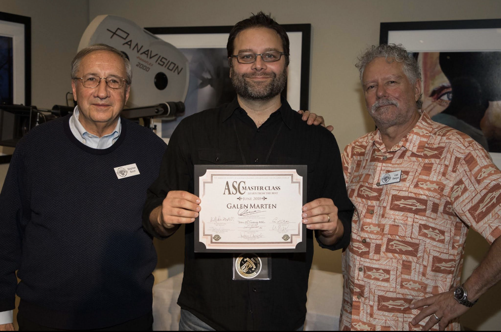

Freedomology Labs
Lead video production, team direction and YouTube channel strategy. Directed, edited, co-wrote, co-produced and scored Live Free and Am I Happy? (in post-production). Manage shared Premiere Pro media, proxies and archive.
Video production · Film · Post-production
Director, producer, podcast producer, cinematographer and editor. Drone photography and videography. Documentary storytelling, branded content, interviews and narrative film—from the first outline to the final cut.

Professional background
Lead video production, team direction and YouTube channel strategy. Directed, edited, co-wrote, co-produced and scored Live Free and Am I Happy? (in post-production). Manage shared Premiere Pro media, proxies and archive.
Promoted from Video Producer to Content Director within a few months. Built and led a team of up to five; ran the YouTube channel and produced more than 50 episodes of REI Roundtable across two seasons. Kept the operation running solo through the height of COVID.
Branding and training videos, including planning, scripting, camera, lighting, location audio, editing, narration and color grading.
Produced, shot and edited branded, sports and promotional work for clients including Vanity Fair, the Cleveland Browns, ESPNU, Jeep, Cedar Point, Mapleside Farms, MOBIS North America and Cuyahoga Community College. Managed planning, budgets, crews and delivery.
Documentary, festival and music-video production, including Plate Up, Cleveland Film Talks and Frim Fram Sauce.
Photography, video production, editing and shoot leadership.
Event promotion, website and newsletter content, photography, radio advertising and entertainment coordination.
Film & television
Film and television credits, including confirmed executive producer credit for REI Roundtable. Projects in post-production are identified separately.
| Project | Year / Status | Credit |
|---|---|---|
| Am I Happy? | Post-production | Director; writer; supervising producer; director of photography; editor; original music; sound mixer |
| Hocking Hills | Post-production | Director; writer; executive producer; editor; actor (Hiker) |
| Live Free | 2026 | Director; writer; producer; director of photography; editor; original music; sound |
| Rob the Adventurer | 2022 | Cinematographer; co-producer; writer; editor |
| The Stakeout | 2020 | Cinematographer; editor |
| Real Estate Investor’s Roundtable | 2019 | Executive producer; director; writer; cinematographer |
| Simms & Lefkoe: The Show | 2018 | Director of photography |
| Occupied | 2018 | Cinematographer |
| Generations | 2017 | Cinematographer; executive producer; writer; editor; actor (Father) |
| Masha Time! | 2017 | Producer; key grip |
| Freedom Chasers | 2017 | Director; writer; co-producer; cinematographer; editor |
| Coffee | 2016 | Cinematographer; producer; editor |
| Say You Will | 2016 | Gaffer; actor (Runner) |
| The Making of Hocking Hills | 2016 | Self — writer, director, producer |
| Ms. Parker | 2015 | Director; writer; executive producer; editor; composer; visual effects |
| Hobo Cop | 2015 | Cinematographer; actor (Choking Hobo) |
| A Strange Bird | 2014 | Cinematographer |
| Brown Eye Girl | 2014 | Director; writer; producer; cinematographer; editor |
| Sugar & Spice | 2013 | Associate producer; actor (Frank) |
Let’s talk
For production opportunities and project inquiries: